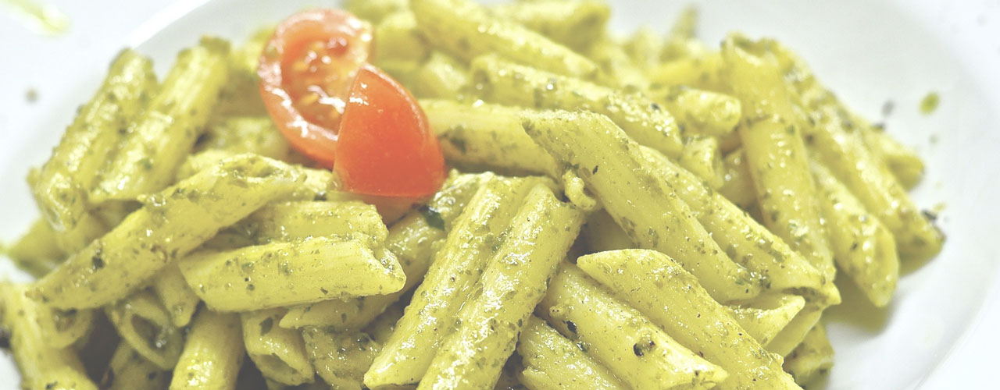
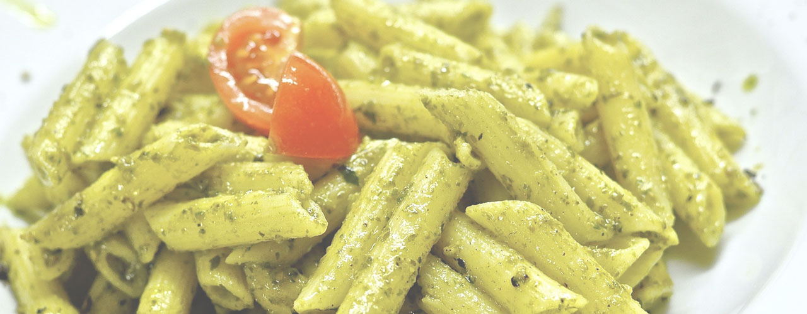

¿Quiénes somos?
La Parolaccia nace en Roma, Italia. A mediados del siglo XX, una familia funda un humilde Restaurante en el tradicional Barrio Trastévere. Su particular modo de recibir a los clientes inspiró al nombre, que se convertiría en un sinónimo del buen comer. Lo llamaron “La Parolaccia” cuyo significado es “La Mala Palabra” o “La Palabrota”.
Con más de 28 años de presencia en Argentina, La Parolaccia sigue siendo fiel al estilo que le dio origen calidad, cordialidad y una esmerada atención. Manteniendo intacta la esencia a lo largo de su historia y logrando distinguir el verdadero sabor de la cocina italiana, La Parolaccia se ha convertido en un clásico de Buenos Aires.
Dentro de su completa carta, donde las pastas son protagonistas por excelencia, encontrará una amplia variedad de opciones apta para los paladares más exigentes.